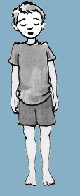

1. Zet je voeten parallel en iets uit elkaar.
2. Voel dat je verankerd bent in de vloer.
3. Sta met rechte benen en houd je gewicht op je hielen.
4. Haal adem via je buik.

De kat
1. Kniel neer en zet je handen plat op de grond.
2. Op een uitademing maak je je rug hol, houdt je armen recht.
3. Bij de volgende uitademing maak je je rug bol.
4. Bij de volgende uitademing neem je weer de eerste houding aan.